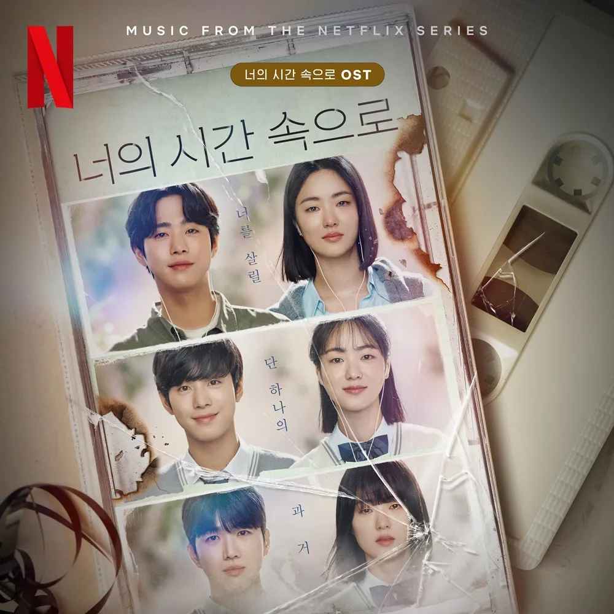

안녕하세요 라보엠입니다.
넷플릭스 대만 드라마 상견니의 한국 리메이크작 너의 시간 속으로를 재밌게 봤습니다. 초반에는 과거와 현재를 오가는게 혼란스러운데 보다보면 뭔가 퍼즐이 맞춰지는 느낌입니다. 극중 나오는 추억의 노래들이 참 좋아서 오늘은 너의 시간 속으로의 OST 를 공유하겠습니다.
너의 시간 속으로 | 넷플릭스 공식 사이트
상실의 아픔을 겪고 있는 여자가 마법처럼 시간을 거슬러 1998년으로 돌아간다. 그리고 그곳에서 죽은 연인과 묘하게 닮은 한 남자를 만난다.
www.netflix.com
넷플릭스 너의 시간 속으로 예고편
넷플릭스 너의 시간 속으로의 주인공역을 맡은 전여빈은 예전에 방영된 드라마 멜로가 체질에서도 죽은 연인 때문에 슬퍼하던 역할이었는데, 이 드라마에서도 죽은 연인 때문에 슬퍼합니다. 테이프를 들으며 과거와 미래로 타임슬립을 하며, 연인을 찾아가는 과정이 신비롭고, 대학시절로 돌아갔을 때의 둘의 풋풋한 연인의 모습은 참 사랑스럽습니다. 이 드라마에서 타임슬립을 할 수 있는 중요한 역할을 하는 카세트 플레이어의 노래는 서지원의 내 눈물 모아 입니다. 극중에서 서지원의 내 눈물 모아의 카세트 테이프를 들으며 2023년에서 1998년으로 타임슬립을 합니다. 이 노래는 극중에서 계속 반복해서 나옵니다. 저도 좋아했던 노래였어요.
이 외에도 김예림 - 벌써 일년(브라운 아이즈), 뉴진스 - 아름다운 구속(김종서), 손디아 - 사랑한다는 흔한 말(김연우) 등 옛 추억을 불러일으키는 명곡들이 많이 나옵니다.
너의 시간 속으로 OST 모음
드라마를 보지 않고 노래만 들어도 괜찮은 넷플릭스 드라마 너의 시간 속으로의 음악들 추천 드립니다.

내 눈물 모아 가사 - 서지원 너의 시간속으로 OST
창밖으로 하나 둘씩
별빛이 꺼질 때쯤이면
하늘에 편지를 써
날 떠나 다른 사람에게 갔던
너를 잊을 수 없으니
내 눈물 모아서 하늘에
너의 사랑이 아니라도
네가 나를 찾으면 너의 곁에
키를 낮춰 눕겠다고
잊혀지지 않으므로 널
그저 사랑하겠다고
그대여 난 기다릴 거예요
내 눈물의 편지 하늘에 닿으면
언젠가 그대 돌아오겠죠 내게로
난 믿을 거예요 눈물 모아
너의 사랑이 아니라도
네가 나를 찾으면 너의 곁에
키를 낮춰 눕겠다고
잊혀지지 않으므로 널
그저 사랑하겠다고
그대여 난 기다릴 거예요
내 눈물의 편지 하늘에 닿으면
언젠가 그대 돌아오겠죠 내게로
그대여 난 기다릴 거예요
내 눈물의 편지 하늘에 닿으면
언젠가 그대 돌아오겠죠 내게로
난 믿을 거예요 눈물 모아